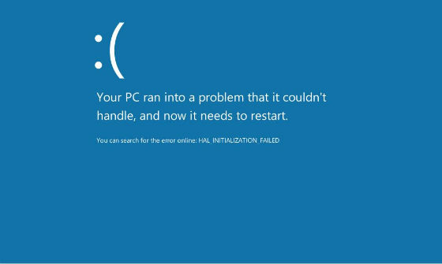

虚拟机vmware8下安装体验win8开发者预览版
2011-09-17
这两天微软发布了windows8的开发者预览版本(dev preview edition)提供下载,首日的下载量就突破50万。虽然这是一个被阉割过的windows8版本，我还是想下载下来安装在虚拟机上试试。
首先应该去微软官方网站下载win8的镜像ISO文件，这里是官方下载地址，我下载的是WindowsDeveloperPreview-32bit-English.iso。
WindowsDeveloperPreview下载地址
原先我的vmware版本是7.1.4，但是在安装win8的时候一开始就碰到了·
"your pc ran into a problem that it couldn't handle,and now it needs to restart"·
正所谓出师不利:

解决办法是到vmware官方网站http://www.vmware.com去下载最新的Vmware Workstation 8 .0 build 471780。也是这两天才最新发布的，估计是为了迎接win8-dev-pre的发布。先卸载掉原先的vmware 7.1.4,下载并安装好Vmware Workstation 8 .0 build 471780好后，安装win8-dev-pre就没有出现上面“卡哇伊”的蓝屏画面了，接下来如果不幸运的话你可能还会遇到
Vmware Workstation 8 Windows Cannot Read the settings from the unattend answer file`
问题，并且不断重启还是老样子，这里，我是通过在虚拟机设置里面把软驱(floppy)移除来解决问题的，因为在floppy的autoinst.flp文件中包含了product key的信息，所以必须移除。然后，然后当然是出现如下所示的正常系统安装画面了：

记得系统的版本选择windows7，因为没有windows8的选项可以选。关于接下去如何安装系统，我就不说了。该分区的分区，该下一步的下一步，安装完后该重启的重启，重启之后照例会有一些初始化和Windows Live ID的设置，只是界面比以前的系统好看了些。重启后使用刚才设置的windows Live账号密码登陆系统。一些在win8发布会上展示的功能如App store在这个开发者预览版本里面还不能用，所以说是被阉割的版本，不过界面体验确实比win7炫多了，可以上几张图为证。点击最左下角的开始按钮可以在不同的应用直接切换。
(注：以下均为1366x768的全屏截图，只是上传到博客这里才变小的)


是不是很赞？
补充
微软与9月20号发布了windows8开发者预览版的密钥。估计是他们前几天发布的时候忘记了这件事所以现在补上。当你需要重装win8开发者预览版的时候就会提示你输入密钥。微软响应中心日前就提供了两个产品密钥，供测试人员使用。
第一个产品密钥适用于客户端版本，也就是Windows 8开发者预览版，产品密钥为：6RH4V-HNTWC-JQKG8-RFR3R-36498。
第二个产品密钥适用于服务器版本，也就是Windows Server 8开发者预览版，产品密钥为：4Y8N3-H7MMW-C76VJ-YD3XV-MBDKV。
Category: articles Tagged: z/OS